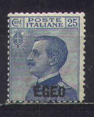

Égée
Calimno Caso Cos Egeo Karki Leros Lipso Nisiros Patmos Piscopi Rodi Scarpanto Stampalia
Return To Catalogue - Italy - Italian occupation of the Aegean Islands, part 2
Note: on my website many of the
pictures can not be seen! They are of course present in the
catalogue;
contact me if you want to purchase the catalogue. /p>

25 c blue 50 c violet
Value of the stamps |
|||
vc = very common c = common * = not so common ** = uncommon |
*** = very uncommon R = rare RR = very rare RRR = extremely rare |
||
| Value | Unused | Used | Remarks |
| 25 c | * | * | |
| 50 c | * | * | |
50 c lilac (blue overprint) 1 L blue (red overprint) 5 L + 2 L red (blue overprint)
20 c violet (red overprint) 25 c green (red overprint) 50 c grey (red overprint) 1.25 L blue (red overprint) 5 L + 2 L red (blue overprint)
This issue was issued for stamp collectors and was not available on the islands themselves!
15 c violet (red overprint) 20 c brown (blue overprint) 25 c green (red overprint) 30 c brown (blue overprint) 50 c lilac (red overprint) 75 c red (blue overprint) 1.25 L blue (red overprint) 5 L + 1.50 L lilac (red overprint) 10 L + 2.50 L brown (red overprint) Airmail (all identical design) 50 c green (red overprint) 1 L red (blue overprint) 7.70 L + 1.30 L brown (red overprint) 9 L + 2 L grey (red overprint)

20 c brown (blue overprint) 25 c green (red overprint) 30 c brown (blue overprint) 50 c lilac (blue overprint) 75 c red (blue overprint) 1.25 L blue (red overprint) 5 L + 2.50 L orange (blue overprint)
10 c green 15 c violet 20 c brown 25 c green 30 c orange 50 c lilac 75 c red 1.25 L blue 1.75 L brown 2.75 L red 5 L + 2 L violet 10 L + 2.50 L brown Airmail stamps 50 c red 1 L green 3 L lilac 5 L orange 7.70 L + 2 L brown 10 L + 2.50 L grey
100 L blue and olive
10 c brown (red overprint) 20 c brown (blue overprint) 25 c green (red overprint) 30 c black (red overprint) 50 c violet (blue overprint) 75 c red (blue overprint) 1.25 L blue (red overprint) 1.75 L + 25 c brown (red overprint) 2.55 L + 50 c orange (blue overprint) 5 L + 1 L violet (red overprint)
50 c green (red overprint) 80 c brown (blue overprint) 1 L + 25 c blue (red overprint) 2 L + 50 c brown (blue overprint) 5 L + 1 L blue (red overprint) Airmail express stamps 2.25 L + 1 L blue and red (country name in blue) 4.50 L + 1.50 L yellow and grey (country name in yellow)
3 L brown 5 L lilac 10 L green 12 L blue 15 L red 20 L black
5.25 L + 19.75 L red, green and grey 5.25 L + 44.75 L green, red and grey
20 c red 25 c green (red overprint) 50 c violet (design as 25 c, red overprint) 1.25 L blue (red overprint) 5 L + 2.50 L blue (red overprint) Airmail 50 c brown (red overprint) 75 c red 5 L + 2.50 L orange 10 L + 5 L green (red overprint)
10 c grey (red overprint) 15 c brown 20 c orange 25 c green (red overprint) 30 c red 50 c green 75 c red 1.25 L blue (red overprint) 1.75 L + 1 L violet (red overprint) 2.55 L + 2 L red 2.75 L + 2 L red-brown Airmail 25 c green 50 c grey (red overprint) 75 c red 80 c brown 1 L + 50 c green 2 L + 1 L blue (red overprint) 3 L + 2 L violet (red overprint) Airmail express stamps 2 L + 1.25 L blue 4.50 L + 2 L green
10 c brown (blue overprint) 15 c violet (red overprint 20 c brown (blue overprint) 25 c green (red overprint) 30 c lilac (blue overprint) 50 c green (red overprint) 75 c red (blue overprint) 1.25 L blue (red overprint) 1.75 L + 1 L orange (blue overprint) 2.55 L + 2 L olive (red overprint) Airmail 25 c violet (red overprint) 50 c green (red overprint) 80 c blue (horses, red overprint) 1 L + 1 L lilac (map, blue overprint) 5 L + 1 L red (portrait of Augustus, blue overprint)
1.25 L blue 2.75 L + 2 L brown
5 c brown (statue of wolf) 10 c red (cross with crown) 50 c violet (design as 5 c) 75 c red (design as 10 c) 2 L lilac (design as 10 c)
25 c green ( view of houses)
1.25 L blue (design as 25 c)
Airmail ('POSTE AEREA')
50 c grey (airplane and statue)
1 L violet (airplane and city)
2 L blue (design as 50 c)
5 L red-brown (design as 1 L)